授業資料の間違いに気づいた場合は、ぜひ教えてください。
1. 今回の内容
まずは、前回の問題の説明をします。 その後、コンピューター内での数値の表現を扱います。 （情報技術者試験の基本情報などでも頻出の内容です。）
2. プログラミング言語による整数の2進表現と16進表現
C, Python, Ruby, Julia, JavaScript, Java 等の多くのプログラミング言語では、2進法の 1010 は、0b1010 と表記します(C言語の2進リテラルはC23規格からの標準対応です)。b は2進を表す binary の頭文字です。また、16進法の ab は 0xab と表記します。x は16進を表す hexadecimal からです。
2.1. Python
>>> 0b11101010
234
>>> 0xea
234
>>> bin(234)
'0b11101010'
>>> hex(234)
'0xea'2.2. Ruby
irb> 0b11101010
234
irb> 0xea
234
irb> 234.to_s(2)
"11101010"
irb> 234.to_s(16)
"ea"2.3. Julia
julia> Int(0b11101010)
234
julia> Int(0xea)
234
julia> string(234, base=2)
"11101010"
julia> string(234, base=16)
"ea"2.4. JavaScript
> 0b11101010
234
> 0xea
234
> (234).toString(2)
'11101010'
> (234).toString(16)
'ea'ほとんどのプログラミング言語では標準では10進法の整数から2進法や16進法への変換は整数のみですが、JavaScript では10進法の小数から2進法や16進法への変換も可能です。
3. コンピューター内での数の表現
ここでは、コンピューター内での数の表現について考えます。コンピューター内部では、0と1のみで数を表現する必要があります。0または正の整数については、符号なし整数として素直に2進法で表現することができます。このような場合、1つの整数に \(n\) ビット用いる場合は、\(0\sim 2^n-1\) の範囲の整数が表現できます。
たとえば、プログラミング言語Cでは、 unsigned int という型宣言により、多くの処理系では32ビットの符号なし整数を扱うことができます（\(0\sim 2^{32}-1\)の範囲の整数）。
一方で、負の数を含む整数表現については、歴史的には様々な手法が提案されてきました。ここでは、「符号付き絶対値表現」と、現在主流となっている「2の補数表現」について説明します。
3.1. 符号付き絶対値表現
コンピューター内では、負の整数をどう表現するのでしょうか。もっとも素直に思いつくのが、正負を表す符号のために1ビットを使う方法です。コンピューター内で1つの整数表現に \(n\) ビットを使うとすると、一番左側の1ビット（最上位ビット）を正負の符号に用い、\(n-1\) ビットを絶対値の表現につかう方法です。最上位ビットが1のとき負、0のとき正を表します。（符号付き絶対値表現をした2進法による表記には、下付きの「(2s)」をつけて表すことにします。）
-
整数として4ビットを用いる場合、下位の3ビットで整数の絶対値を表す（つまり、0〜7）
-
最上位の1ビットを用いて符号を表す
たとえば、4ビットを用いて \(-5\) を表現する際には、負なので最上位ビットを1として、絶対値5を残りの3ビットで表現します。
| 表現したい数 | 符号付き絶対値表現 |
|---|---|
−0 |
1000 |
−1 |
1001 |
−2 |
1010 |
−3 |
1011 |
−4 |
1100 |
−5 |
1101 |
−6 |
1110 |
−7 |
1111 |
0 |
0000 |
1 |
0001 |
2 |
0010 |
3 |
0011 |
4 |
0100 |
5 |
0101 |
6 |
0110 |
7 |
0111 |
この表現の問題点は、\(1000_{\text{(2s)}}=-0\) と \(0000_{\text{(2s)}}=+0\) のように、0の表現が2通りになってしまうことです。また、正の整数と負の整数を素直に加算することができません。\(3 + (-2)\) を単純に計算すると下記のように \(-5\) になってしまいます。
そのため、整数の正負や演算ごとに場合分けをして加算回路と減算回路を準備しておく必要があります。
3.2. 補数表現による負の数の表現
2の補数表現では、負の数を含む足し算も、符号なし整数と同じ足し算の仕組みで計算できます。符号付き絶対値表現では符号に応じて足すか引くかを選ぶ必要がありましたが、ここでは負の数の表し方そのものを工夫します。
|
この節の読み方
まずメスシリンダーで仕組みをつかみ、次に容量を16に変えて4ビットの2の補数表現へ進みます。「桁上げと桁あふれを区別する」までが基本です。後の「発展：合同式で確かめる」は、読み飛ばして浮動小数点表現へ進めます。 |
まず、身近な例でこのような表現方法を考えてみましょう。ここでは、0から10までの目盛りが入った容量10のメスシリンダーを使い、水位は整数だけを考えます。計算の途中で満杯になった1本は取り除くので、数を記録するときの水位は0〜9の10通りです。メスシリンダーにマイナスの量の水を入れることはできませんから、水の量は常に0以上です。この状況で、どうすれば負の数を表せるでしょうか。
アイデア: 「上からの空き」で負の数を表す
発想を転換して、メスシリンダーを上から見てみます。水位6まで水が入っているとき、すりきり一杯(10)までの空きは \(10-6=4\) です。この「あと4足りない」という空きの量を、負の数 \(-4\) の絶対値とみなすことにします。つまり、
-
正の数は、水位をそのまま読む
-
負の数は、上からの空き(10−水位)にマイナスを付けて読む
という2通りの読み方をするのです。
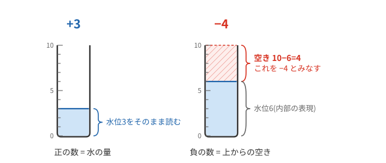
一般に、\(y=10-x\) の関係にある \(x\) と \(y\) について、
\(x\) の10の補数は \(y\) である
といいます。負の数 \(-4\) を、絶対値4の10の補数である6(水位6)で表す——これが補数表現です。コンピューター内部の「水位」にあたるものが、0以上の整数(ビット列)です。
正負の境目を決める
ところで、水位6を見たとき、「正の数6」と読むのか「空き4、すなわち \(-4\)」と読むのかは、どうやって区別するのでしょうか。ここは取り決めが必要なところです。この章では、
-
水位0〜4 → 0または正の数として、水位をそのまま読む
-
水位5〜9 → 負の数として、空きにマイナスを付けて読む
と取り決めます。水位10は計算途中の満杯の状態です。満杯の1本を取り除き、空のメスシリンダー（水位0）を結果として残します。
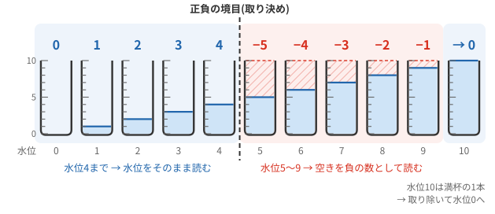
この取り決めで、\(-5\) から \(4\) までの10通りの整数が表せるようになりました（結果を記録する水位は0〜9なので、0の表現も水位0の1通りです）。
境目は取り決めですが、ここでは正と負にほぼ半分ずつ割り当てました。後で2進法に移ると、この分け方によって「先頭のビットだけで正負がわかる」という利点が生まれます。
足し算してみる — 「注ぎ足すだけ」で引き算までできる
この表現の威力は足し算で発揮されます。負の数が混ざっていても、対応する水位の水をただ注ぎ足すだけでよいのです。引き算のための特別な仕組みは要りません。ルールは1つだけ——あふれたら、あふれた分を2本目のメスシリンダーに受けて、満杯になった1本目(=10)は捨てます。
まず、\((-4)+3\) を計算してみます。\(-4\) は水位6、\(3\) は水位3で用意し、注ぎ合わせると水位9になります。9は負の領域ですから、空き1を読んで答えは \(-1\)。正解です。
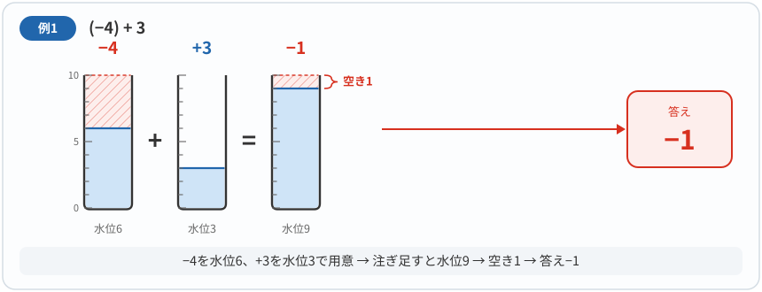
次に \((-3)+4\) です。\(7+4=11\) となるので水があふれます。あふれた分1を2本目に受け、満杯の1本目は捨てます。2本目に残った水位1が答えです。\(10\) を捨てる操作が、ちょうど \(11-10=1\) の計算になっています。
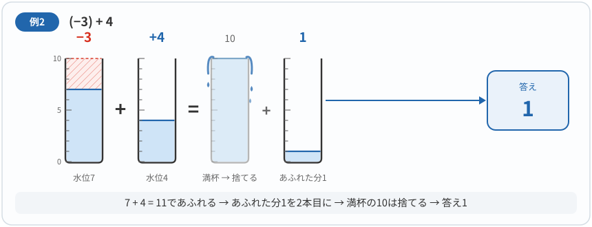
負の数同士の \((-1)+(-2)\) も、まったく同じ手順で計算できます。\(9+8=17\) であふれ、2本目に残るのは水位7。7は負の領域なので空き3を読んで、答えは \(-3\) です。
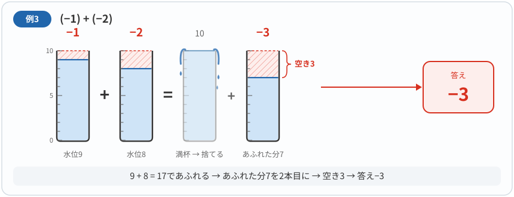
\((-3)+3\) のような「足すと0になる」組合せでは、ちょうど満杯になります。満杯になった1本を取り除くと、残りの水はありません。空のメスシリンダー、水位0が答えです。互いに打ち消し合う数を足すと0になる性質が、水の操作に対応しています。
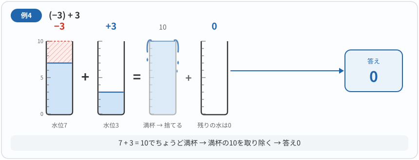
うまくいかない場合 — 桁あふれ
では、\(3+4\) はどうなるでしょうか。水位は7になり、一見正しく計算できているように見えます。しかし、取り決めにより水位7は負の領域です。空き3を読むと、\(3+4=-3\) という、あり得ない結果になってしまいました。
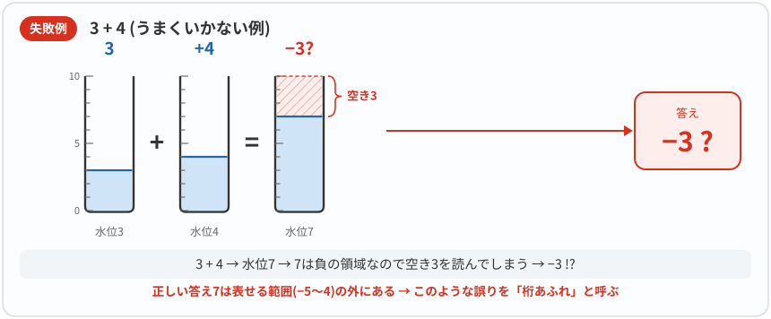
原因は答えの側にあります。正しい答え7が、この取り決めで表せる範囲 \(-5\sim 4\) からはみ出しているのです。このように、計算結果があらかじめ取り決めた範囲を超えてしまうことで発生する誤りを「桁あふれ」と呼びます。ここでは水はあふれていません。それでも、数としては桁あふれです。逆に、水があふれた先ほどの \((-3)+4\) は正しく計算できました。水があふれることと、数の桁あふれは別のことなのです。結果が範囲内に収まっている限り、「注ぎ足すだけ」の仕組みは常に正しく働きます。
3.3. 2の補数表現
コンピューター内部で使われる2の補数表現は、前節のメスシリンダーの仕組みをそのまま2進法に置き換えたものです。まず容量を16に変えてみましょう。水位0〜15は、4ビットの 0000〜1111 に対応します。0〜7をそのまま読み、8〜15は「16までの空き」にマイナスを付けて読むと、−8〜7が表せます。一般に、\(n\) ビットでは容量 \(2^n\) と考えます。対応関係を先に頭に入れておくと、この節の内容はすべてメスシリンダーの話の言い換えとして読めます。
メスシリンダー(容量10) |
2の補数表現(\(n\)ビット) |
容量10 |
\(2^n\) |
記録する水位（0〜9） |
ビット列を符号なし整数として読んだ値 |
空き(10−水位)で負の数を表す |
2の補数(\(2^n-m\))で \(-m\) を表す |
水位5以上を負の数の領域とする |
最上位ビットが1なら負の数とみなす |
満杯の1本を取り除き、残りの水位を読む |
\(n+1\)ビット目への桁上げは無視する |
負の数 \(-m\) を表す水位は、容量から \(m\) を引いた \(2^n-m\) です。固定した \(n\) ビットで、この値を \(m\) の2の補数と呼びます。たとえば4ビットで \(-5\) を表すには、\(16-5=11\)、すなわち 1011 を使います。0については、反転して1を足し、下位 \(n\) ビットを残すと0になります。
一般に、\(n\) ビットの2の補数表現の範囲は
です。最上位ビットが0なら0または正、1なら負と判断できます。この教材では、ビット列をこの規則で読むことを下付きの「(2c)」で示し、符号なしの2進数として読む場合の「(2)」と区別します。
表現したい数 |
2の補数表現 |
「2の補数表現」を符号なし2進表現として解釈したときの数 |
−8 |
1000 |
8 |
−7 |
1001 |
9 |
−6 |
1010 |
10 |
−5 |
1011 |
11 |
−4 |
1100 |
12 |
−3 |
1101 |
13 |
−2 |
1110 |
14 |
−1 |
1111 |
15 |
0 |
0000 |
0 |
1 |
0001 |
1 |
2 |
0010 |
2 |
3 |
0011 |
3 |
4 |
0100 |
4 |
5 |
0101 |
5 |
6 |
0110 |
6 |
7 |
0111 |
7 |
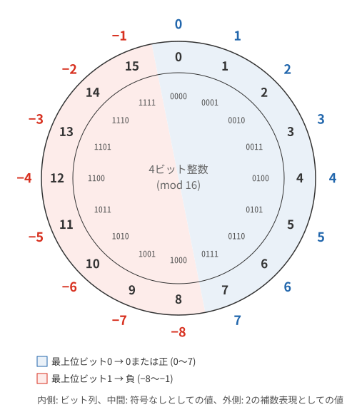
まず、正の整数から、2の補数表現による負の整数の求め方について説明します。 ここでは、整数表現に用いるビット数を4とします。 このとき、\(-5\) の2の補数表現を求めるには、正の整数 \(5\) の2の補数を計算します。つまり、
と計算します。よって、\(11\) は2の補数表現では \(-5\) を表していることになります（表 3参照）。
また、逆に11の2の補数を求めると、5になることは明らかでしょう。つまり、「2の補数表現された負の整数」の絶対値を知りたいときは、2の補数を計算すればよいことがわかります。
ところで、コンピューター内部では数は2進法で表現されていますので、2の補数の計算は10進法を使うより2進法のままで計算した方が簡単です。以下のように考えます。
\(2^4=10000_{(2)}\) ですから \(2^4-1\) の2進表現は4つの1が並んだ \(1111_{(2)}\) となります。この値から、5の4ビット2進表現 \(0101_{(2)}\) を引いた結果は、\(0101_{(2)}\) の各桁のビットの0と1を入れ替える（ビットを反転する）ことと等価です。各桁のビットの反転によって、\(1010_{(2)}\) となります。最初に1を引いてしまったので、その分を最後に加えて、\(1011_{(2)}\) が得られます。これで、2の補数表現で、\(-5\) に相当する表記がえられました。これを、\(1011_{\text{(2c)}}=-5\) と書くことにします。
この手続をまとめると、以下のようになります。（4ビットを整数表現に用いるとします。）
-
5 を2進法に変換 → 0101(2)
-
0101(2) の各桁のビットを反転 → 1010(2)
-
1010(2) に 1 を加算 → 1011(2)
-
\(-5=1011_{\text{(2c)}}\)
なぜこの手続きで \(2^4-5\) が計算できるのかは、買い物のお釣りの計算にたとえるとよくわかります。1000円を出して437円の買い物をしたときのお釣り \(1000-437\) を素直に筆算すると、繰り下がりが連鎖して面倒です。そこで、まず999円から引いて、最後に1円を足します。\(999-437\) は、どの桁も「9−その桁」を書くだけで繰り下がりが決して起きません。2進法ではこの「9−その桁」にあたるものが「1−そのビット」、すなわちビットの反転なのです。
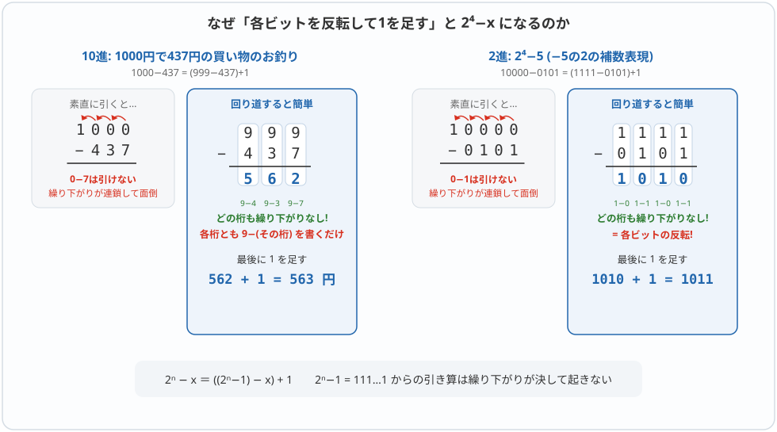
4ビットを整数表現に用いるとして、\(3 + (-7)\) を計算してみましょう。
-
\(3\) を2進法に変換 → \(0011_{(2)}\)
-
正の整数なのでそのまま2の補数表現とする → \(3=0011_{\text{(2c)}}\)
-
-
\(7\) の2の補数を計算して \(-7\) を表す
-
まず \(7\) を2進法に変換 → \(0111_{(2)}\)
-
\(0111_{(2)}\) の各ビットを反転 → \(1000_{(2)}\)
-
\(1000_{(2)}\) に1を加算 → \(1001_{(2)}\)
-
よって \(-7=1001_{\text{(2c)}}\)
-
-
\(3+(-7)\) を2の補数表現で計算すると次の筆算のようになります（1(2)+1(2)で桁上りが生じることに注意）。
-
\(1100_{\text{(2c)}}\) の最上位ビットが1なので、これは負の整数であることがわかります。 そこで、各ビットを反転して1を足し、その結果を符号なしで読むと絶対値がわかります。
-
\(1100_{(2)}\) の各ビットを反転 → \(0011_{(2)}\)
-
\(0011_{(2)}\) に1を加算 → \(0100_{(2)}\)
-
よって、\(0100_{(2)}=4\) より、\(1100_{\text{(2c)}}=-4\) であることが確認できました
-
桁上げと桁あふれを区別する
4ビットの2の補数表現で表せる範囲は −8〜7 です。計算の正しい答えがこの範囲に入っていれば、下位4ビットを残す足し算で正しく計算できます。範囲から外れることを、符号付き整数の桁あふれ（オーバーフロー）といいます。
一方、5ビット目への桁上げは、水を注ぎ合わせて満杯の1本ができることに対応します。この1本を取り除くこと自体は、計算の失敗ではありません。
| 計算 | ビット列を符号なしで足した結果 | 下位4ビットの読み方 | 正しい答えは範囲内か |
|---|---|---|---|
\(3+(-7)\) |
|
|
はい。正しく計算できる |
\((-3)+5\) |
|
|
はい。桁上げがあっても正しい |
\(1+7\) |
|
|
いいえ。8は範囲外 |
\((-4)+(-5)\) |
|
|
いいえ。−9は範囲外 |
表の空白で区切った先頭の 1 が、取り除く5ビット目です。筆算の途中は符号なしのビット列として計算し、下位4ビットを残してから2の補数表現として読みます。
異符号の2数を足した答えは、その2数の間に収まるため、桁あふれは起きません。同符号の2数を足して結果の符号が変わった場合が、桁あふれです。メスシリンダーの \(3+4\) の例と同じ見方です。
|
ここまでで押さえたいこと
|
桁あふれが起きたときのプログラムの動作は、言語や型によって異なります。ここで学んだ固定ビット幅の計算の仕組みだけから、すべての言語の動作が決まるわけではありません。
データサイエンスや人工知能等の分野で現在もっとも広く使われているプログラミング言語Pythonでは、整数は最初から任意精度で表現されており、メモリなどの資源が許す限り必要な桁数が増えるため、固定幅の整数のような桁あふれは起こりません。
そのため、固定ビット幅の整数を扱うためには、numpy という数値演算のためのライブラリをあらかじめ導入しておく必要があります。以下では numpy が使えることを前提に、Pythonでの桁あふれの例を見てみます。
8ビットの2の補数表現による整数の演算 \(127+1\) と \((-128)+(-1)\) の計算結果です。（np.int8(127) は8ビットの2の補数表現による整数で127を意味しています。）
この例では範囲を超えた結果が8ビットに収められます。NumPyの整数スカラーの桁あふれは、設定によって警告や例外の対象になります。以下では動作を明示するため、警告を表示する設定にしています。
>>> import numpy as np
>>> _ = np.seterr(over="warn")
>>> print(int(np.int8(127) + np.int8(1)))
-128
>>> print(int(np.int8(-128) + np.int8(-1)))
127
>>> print(int(np.int8(100) + np.int8(100)))
-56最後の例では \(100+100\) が \(-56\) になっています。8ビットの2の補数表現で表せる範囲は \(-128\leq m\leq 127\) であり、\(200\) はこの範囲を超えているためです。
これもメスシリンダーで説明できます。8ビットの2の補数表現は、容量 \(2^8=256\) のメスシリンダーで、水位128以上を負の領域と取り決めたものにあたります。水位100の水どうしを注ぎ合わせると水位200になります。水はあふれていないのに、水位200は境目の128を越えて負の領域に入ってしまっているため、空き \(256-200=56\) を読んで \(-56\) となるのです。容量10のメスシリンダーでの失敗例 \(3+4\) と、まったく同じ仕組みです。
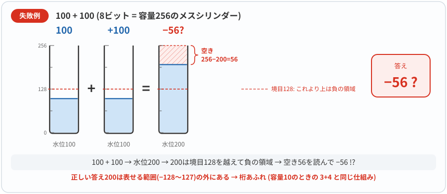
（警告の行は省略しています。over="raise" に設定すれば例外が発生します。参照：NumPy seterr。）
次に、データ科学分野で広くつかわれているプログラミング言語Juliaでの例です。
（Int8(127) は8ビットの2の補数表現による整数で127を意味しています。また、 bitstring は与えられた値のコンピューター内部での2進法による表現を取り出す関数です。）
Juliaもビット数で定まる値の範囲を超えると、何のエラーも出さずにあふれたビットを無視して結果を返していることがわかります。
julia> Int8(127) + Int8(1)
-128
julia> Int8(-128) + Int8(-1)
127
julia> bitstring(Int8(-128))
"10000000"
julia> bitstring(Int8(-1))
"11111111"
julia> bitstring(Int8(127))
"01111111"様々なメリットのある2の補数表現ですが、欠点もあります。大小比較がやや複雑になることです。ビット列を符号なし整数としてそのまま比較すると、負の数のほうが大きな値になってしまい、大小関係が一致しないためです。後述する浮動小数点の指数部で、2の補数ではなくバイアス表現が使われるのはこの点を避けるためです。
ここまでは、整数同士の加算で計算結果が表現可能な範囲を超えてしまう「2の補数表現での桁あふれ」を扱ってきました。これに関連して、もう一つよく似た現象として、ビット幅の異なる型へ値を変換する際のオーバーフローがあります。これは2の補数の加算で起こる桁あふれとは仕組みは異なりますが、「定められたビット数で表せる範囲を超えてしまう」という点では同じカテゴリの問題です。次のコラムは、こうした型変換時のオーバーフローが引き起こした有名な実例です。
|
型変換のオーバーフローが起こした大規模事故 — アリアン5の打ち上げ失敗
1996年6月4日、アリアン5の初飛行は打ち上げ直後に失敗しました。調査報告によれば、慣性基準装置で水平速度に関連する内部変数を64ビット浮動小数点から16ビット符号付き整数へ変換した際、値が範囲に収まらず例外が発生しました。同じソフトウェアを使う予備装置も停止していたため、切り替えでは救えませんでした。 問題の処理はアリアン4から引き継いだ姿勢の初期調整の機能で、アリアン5では飛行中に必要のないものでした。新しい飛行条件に対して、以前の「この値は範囲を超えない」という想定を確かめ直せていなかったのです。範囲外の値を検出する機能があっても、その後どう対処するかまで設計する必要があります。 |
3.4. 発展：合同式で確かめる（読み飛ばせます）
| ここは数学的な裏付けを知りたい人のための節です。計算方法と桁あふれは、ここまでのメスシリンダーの説明で理解できます。読み飛ばす場合は、次の「実数の浮動小数点表現による近似」へ進んでください。 |
証明を開く：満杯の1本を取り除いても、何が保たれるのか
容量を \(N=2^n\) とします。整数 \(a,b\) の差が \(N\) の倍数のとき、両者は \(N\) を法として合同といい、\(a\equiv b\pmod N\) と書きます。「満杯の何本分かだけ違う」という意味です。たとえば、容量16では \(-5\equiv11\pmod{16}\) です。合同は等号ではなく、\(-5=11\) という意味ではありません。
正負を含む整数 \(a,b\) を記録する水位を \(u,v\) とすると、ある整数 \(q,r\) を使って \(u=a+qN,\ v=b+rN\) と書けます。したがって、
つまり、記録した水位どうしを足しても、本来の和との違いは満杯の整数本分だけです。満杯の1本を取り除く操作も、\(N\) を引くだけなので、この性質を保ちます。これが、正負を分けずに足し算できる理由です。
ただし、合同なだけでは答えは一つに決まりません。 容量16なら、7も−9も23も互いに合同です。2の補数表現では、−8〜7という連続した16個の整数から一つを選んで読みます。この範囲内にあって同じ水位に対応する異なる整数はありません。異なる2数の差の絶対値は16未満で、16の倍数にはならないからです。
よって、本来の答えが表現範囲内にあれば、読み出した値はその答えに一致します。 範囲外なら、同じ水位に対応する別の値を読んでしまいます。これが桁あふれです。
引き算も同じで、\(-b\) に対応するビット列を足せば、下位 \(n\) ビットが得られます。乗算についても、
なので、積の下位 \(n\) ビットは符号なし乗算と共通です。ただし、より広いビット幅で積全体を求めるには符号を考慮する必要があります。通常の整数の割り算には、このような置き換えは一般には使えません。
最小値の符号反転にも注意しましょう。4ビットの−8は 1000 です。反転して1を足しても下位4ビットは 1000 のままです。これは手順の例外ではなく、正しい答えの+8が4ビットの符号付き範囲に入らないためです。+8まで扱いたければ、先にビット幅を広げます。
3.5. 実数の浮動小数点表現による近似
前節までは、整数の表現を考えてきました。ここからは、実数について考えます。コンピューターは有限の桁しか扱えませんので、すべての実数を正確に表現することはできません。たとえば0.5は2進法で正確に表せますが、0.1は有限桁では表せず、近似値になります。そのために、生じる問題があります。 ほとんどのプログラミング言語 C, C++, Java, JavaScript, Python, Ruby, R, Julia 等では、\(1.0 - 0.9\) と \(0.1\) の値が等しくなりません。
実際にPythonによって \(1.0-0.9-0.1\) の計算と、\(1.0-0.9 = 0.1\) であることのチェックしてみます。
すると、前者の結果は、0になっていませんし、後者は等しければ True（真） となるはずが、 「等しくない」と False（偽） を結果として返しています。
>>> 1.0 - 0.9 - 0.1
-2.7755575615628914e-17
>>> 1.0 - 0.9 == 0.1
False同様に、 \(0.1+0.2\) と \(0.3-0.2\) の計算と、\(0.3-0.2 = 0.1\) であることのチェックしてみます。やはり、おかしな結果が得られているのが確認できます。
>>> 0.1 + 0.2
0.30000000000000004
>>> 0.3 - 0.2
0.09999999999999998
>>> 0.3 - 0.2 == 0.1
Falseなぜこのような簡単な計算ができないのでしょうか。コンピューターを使って数値計算をするときには、コンピューター内部での数の表現方法に関する知識がないと、とんでもない計算をしてしまう可能性があります。この節では、コンピューター内部での実数の近似表現である浮動小数点表現について学び、どうして上記のようなことが起こるのかを考えてみます。
浮動小数点(Floating Point)表現
\(-1234000000\) のような数を表すときに0の続く部分は数の情報としては冗長で領域の無駄遣いになってしまいます。また、\(0.0000001234\) のように小数点以下に0が並ぶ小さな数についても同様です。そこで、それぞれ \(-1.234\times 10^9\) および \(1.234\times 10^{-7}\) のように小数点の位置を指数表現によって移動して表現する方法を浮動小数点表現といいます。 ここでは、とくに整数部が必ず一桁で、かつ0以外の値がくるように小数点の位置を調整した数の表現方法を正規化された浮動小数点表現と呼びます。以後、特に断らない限りは、浮動小数点表現は正規化されたものを指すことにします。
例えば、\(-123.4\times 10^7\) は浮動小数点表現ですが、正規化されていません。\(-1.234\times 10^9\) は正規化されています。
浮動小数点表現における、各部位の名称は以下のとおりです。
| このような指数表記のコンピューターでの入力・表示方法については後述します。 |
小数の変換
ところで、コンピューター内部では10進法ではなくて2進法で数を表現しなくてはなりません。 第1回授業で2進法の小数を10進法に変換する方法を説明しました。まずは、その復習からです。
この逆で、10進法の小数を2進法に変換する場合にはどうすればよいでしょうか。 10進法では、10倍すると全体の桁が左に1つずれて（シフトして）、小数が順番に1の位に現れますので、順に10倍してその値を拾っていけば、小数の各桁の値がすべて一の位に出現することがわかります。同じように、2進法で小数を1つ左にシフトするには2倍すればよいので、これを小数の数が全部1の位にでてくるまで繰り返します。
よって、1の位にでてきた値を、小数第一位から順に並べて、変換完了です。
IEEE 754による浮動小数点表現
ようやく実際にコンピューター内部での小数を含む数字の表現について説明する準備ができました。ここでは、コンピューターの浮動小数点表現の中でもっとも一般に用いられているIEEE754という標準に基づく方法を紹介します。（IEEEは「アイ・トリプル・イー」と読みます。世界最大の工学系の学会です。）
IEEE754の規格の細部を扱うことはできませんので、最低限の内容についてここでは触れます。また、一般には浮動小数点表現に32ビット（単精度）や64ビット（倍精度）を用いますが、ここでは簡単のため、16ビット（半精度）の浮動小数点表現を用いて説明します。
|
半精度は説明のための「おもちゃ」ではありません。大量の数値を扱う深層学習では、メモリ消費とデータ転送のコストを抑えるため、精度をあえて落とした半精度(FP16)や、その変種で指数部を単精度と同じ8ビットに広げたbfloat16が広く使われています。GPUなどのAI向け演算装置は、これらの短い形式を高速に処理する専用回路を備えています。 |
まず、先程求めた \(0.59375\) の2進法による表現 \(0.10011_{(2)}\) を正規化された浮動小数点表現で表すと、
となります。
なぜ仮数部を2進表現で 1.xxx の形に正規化するのでしょうか。主に3つの理由があります。
-
表現の一意性
-
例えば 0.5×2¹ と 1.0×2⁰ は同じ値ですが、正規化しないと複数の表現が可能になってしまいます
-
0でない正規化可能な値では、仮数の大きさを1以上2未満にそろえると指数と仮数が一つに決まります（有限桁で表せない実数は丸めて近似します）
-
-
精度の最大化
-
2進表現された数の正規化では、仮数部の最上位ビットが常に1となることが分かっているため、この1を省略して保存できます
-
その分、より多くの有効桁数を表現できます
-
-
比較演算の効率化
-
正の正規化数どうしなら、指数部の比較だけで大まかな大小関係がわかります
-
同じ指数なら仮数部を比較します。負の数では大小が逆になり、0やNaNなどは別に扱います
-
例えば、\(0.0110_{(2)}\times 2^2\) は正規化すると \(1.1000_{(2)}\times2^0\) となります。
-
16ビットを用いる場合、「符号（1ビット）」、「指数（5ビット）」、「仮数（10ビット）」の各領域に16ビットを分割します。
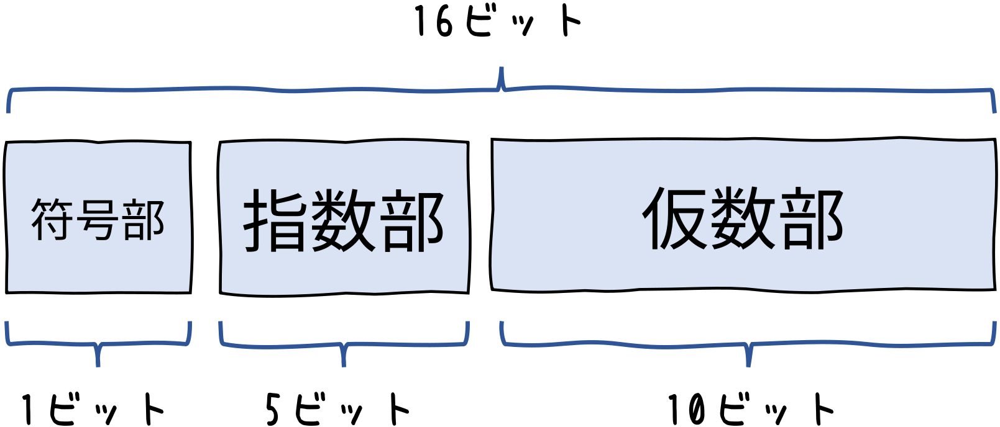
-
符号部は正のとき 0、 負のとき 1 とします。今回は正の数なので 0 です。
-
指数部は 5ビットを用いて \(-14\sim 15\) までの範囲の指数を表現します。指数が \(n\) のとき、\(n+15\) に値を変換してから、2進法の表記に変換します。2の補数を用いないのは、指数部の大小比較を簡単にするためです。 ここでは、指数が \(-1\) なので、\(-1+15=14=01110_{(2)}\) となります。（指数部を
11111とすると無限大または非数値(NaN)を表すために用いられます。） -
仮数部は \(1.0011_{(2)}\) ですが、正規化した場合、必ず1の位は1となるので、この1は節約して省きます。すると、残りの小数点以下のビット列は
0011となります。この右側に6ビットの0をつめて、0011000000となります。
このようにして、実数を有限の浮動小数点表現で以下のように表すわけです。
| 符号(1ビット) | 指数(5ビット) | 仮数(10ビット) |
|---|---|---|
|
|
|
全部つなげると、0 01110 0011000000 となります。これが、0.59375 の16ビット浮動小数点表現となります。整数とは表現や計算の方法が大きく異なるため、ほとんどのコンピューターの演算装置は、浮動小数点の計算専用の演算装置を内蔵しています（これを FPU(Floating Point Unit) といいます）。
指数部では、なぜ単純な2進表現ではなく、バイアス表現（+15を加算）を使うのでしょうか。
-
比較の簡単化
-
符号付き数の比較には特別な回路が必要ですが
-
バイアス表現では単純な符号なし整数として比較できます
-
-
特殊値の扱い
-
全ビット0はゼロや非正規化数(後述)のための特殊値、全ビット1は特殊値（無限大/NaN）を表すように自然に対応（正規化数の最小の指数は
00001= \(-14\) です） -
これにより、特殊値の検出が容易になります
-
実例で見てみましょう。
-
指数 \(-14\) を表すには: \(\mathbf{-14} + 15 = 1 \rightarrow 00001_{(2)}\)
-
指数 \(0\) を表すには: \(\mathbf{0} + 15 = 15 \rightarrow 01111_{(2)}\)
-
指数 \(+15\) を表すには: \(\mathbf{15} + 15 = 30 \rightarrow 11110_{(2)}\)
ところで、このままでは \(0\) を表現することが出来ません。なぜなら、仮数部の正規化によって記載されていない \(1\) が必ず最上位ビットには隠れているからです。実は、上記の規則以外に下記のような例外的な表現があります。
- 正のゼロ(\(+0\))
| 符号(1ビット) | 指数(5ビット) | 仮数(10ビット) |
|---|---|---|
|
|
|
- 負のゼロ(\(-0\))
| 符号(1ビット) | 指数(5ビット) | 仮数(10ビット) |
|---|---|---|
|
|
|
- 正の無限大(\(+\infty\))
| 符号(1ビット) | 指数(5ビット) | 仮数(10ビット) |
|---|---|---|
|
|
|
- 負の無限大(\(-\infty\))
| 符号(1ビット) | 指数(5ビット) | 仮数(10ビット) |
|---|---|---|
|
|
|
- 非数(NaN: Not a Number)
| 符号(1ビット) | 指数(5ビット) | 仮数(10ビット) |
|---|---|---|
|
|
|
正のゼロと負のゼロがあると、複素数の計算の極座標表示等でメリットがあります。また、非数については、\(0/0\) などの未定義の計算結果を表す際などに用いられます。
なお、指数部が 00000 で仮数部が0以外の値は非正規化数と呼ばれ、0付近の非常に小さい値を細かく表すために用いられます（本授業では詳細は扱いません）。
先程と同様にプログラミング言語Juliaでも確認してみます。
julia> bitstring(Float16(0.59375))
"0011100011000000"
julia> bitstring(Float16(0))
"0000000000000000"
julia> bitstring(Float16(0)/Float16(0)) # NaN
"0111111000000000"
julia> bitstring(Float16(1)/Float16(0)) # +∞
"0111110000000000"Juliaで扱う浮動小数点表現が、説明と一致していることがわかります。
コンピューターでの指数表記
コンピューターやExcelなどでは次のような数値表現をよく見かけます。
1.23e-14
これは、科学的記数法(指数表記)と呼ばれる表記方法です。この表記は次のように解釈します。
1.23 は仮数部(significand) e-14 は「10の-14乗」を意味する指数部です。記号「e」は「exponential」（指数）の略です。
つまり、1.23e-14 は数学的には次のように表されます。
コンピューターやプログラミング言語では、非常に大きな数値や非常に小さな数値を表現する際にこの指数表記が使われます。
-
1.0e-13は \(1.0 \times 10^{-13}\) （0.0000000000001）を表す -
2.5e6は \(2.5 \times 10^6\) （2,500,000）を表す
この表記方法は、とても小さな数値や大きな数値を簡潔に表現できるだけでなく、浮動小数点数の内部表現(IEEE 754標準)とも関連しています。浮動小数点数は内部的に「仮数部」と「指数部」に分けて格納されており、この表記はその内部構造を反映しています。
表現誤差
このようにして10進法の数値を浮動小数点表現によって表す際の問題点についてここでは見てゆきます。 10進法の \(0.1_{(10)}\) を浮動小数点表現することを考えます。 そこで、まず、2進法に変換します。
以下のように 0.1(10) を順次2倍して、1の位にでてくる値（0または1）を並べてゆきます。
2行目と6行目に0.2が出現していますので、これ以降は循環することになります。 つまり、0.1(10) は2進法では、1の位にでてきた値を、小数第一位から順に並べると
と無限に続く循環小数になります。
|
10進法では有限桁で表すことができる小数が、2進法では循環小数になってしまう例をみました。では、2進法では有限桁で表すことができる小数が、10進法で表すと循環小数になってしまうことはあるのでしょうか？ 考えてみてください。 |
10進法の 0.1 を16ビットの浮動小数点表現（半精度）を用いて表すと、1.1001100110(2) × 2-4 より
-
符号部は正なので
0 -
指数部は \(-4+15=11=01011_{(2)}\)
-
仮数部は1の位の1を省略して
1001100110(IEEE 754の既定の丸め方式は最近接偶数丸めですが、この例では切り捨てと同じ結果になります)
となります。よって、0.1(10)の16ビット浮動小数点表現は
0 01011 1001100110
となります。つまり、0.1 の2進法表現は循環小数になるにもかかわらず、正規化された浮動小数点表現では2進法小数点以下10ビットまでしか値を表現できないことになります。こうして、10進法の値との間に誤差が生じることになります。このような誤差を「表現誤差」と呼びます。
実際に 0.00011001100110(2) を10進法に変換すると 0.0999755859375 となります。 Juliaで実行してみると、たしかに値が一致することがわかります(Python や JavaScript, Cなどで実行しても同様の結果となります)。
julia> using Printf
julia> @printf("%0.16f",Float16(0.1))
0.0999755859375000julia> 0.1 + 0.2
0.30000000000000004 # 0.3ではない
julia> 0.1 + 0.2 == 0.3
false # 等しくないと判定される他にもコンピューターでの計算には、様々な誤差の要因があります。コンピューターで重要な計算をする際には、誤差がどのように生じるか、きちんと学ぶ必要があります。
|
PythonやJuliaなどのプログラミング言語の多くには、このような2進法による表現誤差が発生しないように10進法の演算を提供するライブラリがあります。金額など、10進の有限小数を正確に扱いたい場合に有用です。入力を文字列で与え、必要な精度と丸め方も設定します。 この例は表現誤差なく計算できます。ただし、10進法でも1/3のような循環小数は有限桁では表せず、演算の精度を超えると丸めが必要です。Decimalを使えば、どんな計算も正確になるという意味ではありません。 |
|
Excelで小数点を扱う場合には |
4. 数値計算における様々な誤差
コンピューターでの数値計算には表現誤差の他にも様々な誤差の要因があります。主な誤差の種類と対策について見ていきます。
4.1. 丸め誤差と数値の吸収
丸め誤差とは
丸め誤差は、計算結果を有限の桁数で表現する際に発生する誤差です。コンピューターでは浮動小数点数で実数を近似するため、表現できない値は最も近い値に丸められます。特に繰り返し計算を行う場合、丸め誤差が蓄積されて大きな問題になることがあります。
julia> s = 0
0
julia> for i=1:10000; s += 0.0001; end
julia> s
0.9999999999999062 # 理論値は1.0数値の吸収
吸収は丸め誤差の一種で、大きな数と小さな数の演算（特に加減算）で、小さな数の寄与が完全に失われる現象です。これは浮動小数点数の精度限界によるものです。
>>> a = 1e16
>>> b = 1.0
>>> result = a + b
>>> print(result == a)
True # 小さな値が「吸収」されている
>>> print(result - a) # 理論値は1.0
0.0 # 小さな値の情報が完全に失われているこのケースでは、1.0 が 1e16 と比べてあまりにも小さいため、浮動小数点数の精度限界により、加算結果は単に 1e16 となります。これは、大きな数の最下位の桁よりも小さな数は表現できないためです。
浮動小数点数の精度限界は、科学技術計算や金融計算など、多くの分野で重要な問題となります。
4.2. 桁落ち
桁落ちとは何か
桁落ちは、近い値同士の引き算で有効桁数が大幅に減少する現象です。浮動小数点演算では特に深刻な問題となります。
近い数値を引くと上位の桁が打ち消され、小さな差が残ります。もとの数に含まれていた近似誤差が、その小さな差に対して大きな割合を占めることがあります。これが問題になる桁落ちです。近い数の引き算がいつも不正確になるわけではありません。
実例: 近い値の引き算
julia> a = 1.0000000000001
1.0000000000001
julia> b = 1.0
1.0
julia> a - b
9.992007221626409e-14 # 理論値は1.0e-13a と b は非常に近い値です。理論的には次のようになるはずです。
ここでは、a を2進浮動小数点数として格納する時点で近似誤差が入っています。a - b の引き算自体は、格納された2数に対して正確です。それでも、もとの10進数どうしの差と比べると約0.08%の誤差があります。引き算が新たに誤差を生んだのではなく、入力時の小さな誤差が、差に対しては大きく現れたのです。
二次方程式の解の公式と桁落ち
桁落ちが実用上の問題を引き起こす典型例として、二次方程式の解の公式があります。
の解の公式は次式のとおりであることを思い出してください。
次の二次方程式を考えてみます。
これを展開すると
となります。この方程式の厳密な解は \(x_1 = 10000000\) と \(x_2 = 0.0000001\) です。
解の公式を使ってコンピューターで計算すると、次のようになります。
import math
a = 1
b = -10000000.0000001
c = 1
# 判別式
d = b*b - 4*a*c
# 解の公式
x1 = (-b + math.sqrt(d)) / (2*a)
x2 = (-b - math.sqrt(d)) / (2*a)
print(f"x1 = {x1}") # 出力: x1 = 10000000.0
print(f"x2 = {x2}") # 出力: x2 = 9.96515154838562e-08\(x_1\) の値は正確ですが、\(x_2\) の真の値は \(1 \times 10^{-7}\) であるのに対し、計算結果は \(9.96515154838562 \times 10^{-8}\) となり、約0.35%の誤差が生じています。厳密な解に対して計算値は小さく出ており、この程度でも科学計算や金融計算では問題になることがあります。
なぜ桁落ちが起こるのか
\(x_2\) の計算では次のようになります。
この計算では、非常に大きな値 \(10000000.0000001\) とそれにごく近い値 \(\sqrt{(10000000.0000001)^2 - 4}\) の差を求めています。これらの差は本来非常に小さいですが、大きな数の引き算を経由するため、有効桁数が大幅に失われます。浮動小数点演算では、このような状況で精度の悪化が著しくなります。
対策と改善効果
解と係数の関係式を利用することで桁落ちを回避できます。二次方程式の解の積は \(\dfrac{c}{a}\) であるため、この例では \(x_1 \times x_2 = \dfrac{1}{1} = 1\) が成り立ちます。
そこで、以下のように計算手順を変更します。この実習用の例では、有限の係数を使い、判別式などの途中計算がオーバーフロー・アンダーフローしない場合を考えます。
import math
def solve_quadratic(a, b, c):
"""二次方程式を桁落ちを避けて解く"""
if a == 0:
raise ValueError("a は0以外とする")
d = b*b - 4*a*c
if d < 0:
raise ValueError("この例では実数解だけを扱う")
if b == 0 and c == 0:
return 0.0, 0.0
if b >= 0:
x1 = (-b - math.sqrt(d)) / (2*a)
else:
x1 = (-b + math.sqrt(d)) / (2*a)
# 桁落ちが少ない方の解を先に計算し、積の公式で他方を求める
x2 = c / (a * x1)
return x1, x2
a, b, c = 1, -10000000.0000001, 1
x1, x2 = solve_quadratic(a, b, c)
print(f"改良版解法: x1 = {x1}, x2 = {x2}")
# 出力例: 改良版解法: x1 = 10000000.0, x2 = 1e-07従来解法と改良解法の比較
両方の解法で得られた結果を比較してみましょう。
| 解法 | x₁ | x₂ | x₂の相対誤差 |
|---|---|---|---|
公式通りの解法 |
10000000.0 |
9.96515154838562e-08 |
約0.35% |
改良解法 |
10000000.0 |
1e-07 |
約 \(4.5\times10^{-15}\) % |
従来解法では \(x_2\) に約0.35%の誤差が生じていましたが、改良解法では誤差が大幅に小さくなっています。ただし、表示が 1e-07 でも内部値は \(10^{-7}\) の近似値であり、誤差が0になったわけではありません。
4.3. コンピューターの計算に由来する実際の問題例
宇宙探査に円周率は何桁必要？
NASA・JPLの技術者Marc Raymanは、惑星間航行の計算には円周率として 3.141592653589793 を使うと説明しています。たとえば直径640億kmの円の周長を、この小数点以下15桁に丸めた円周率で計算しても、円周率の丸めに由来する差は約1.5cmです。
ここでの教訓は、桁数を際限なく増やすことではなく、必要な精度に対して、どの誤差がどれだけ影響するかを見積もることです。この例は円周率の近似だけの影響を見たもので、実際の航行計算全体の誤差が1.5cmという意味ではありません。
2038年問題(Year 2038 Problem)
多くのコンピューターシステムで時間を記録するために使われる「UNIXタイムスタンプ」は、1970年1月1日00:00:00 UTCを基準とする秒数です（POSIXではうるう秒を数えません）。これを32ビット符号付き整数で保持する実装では、2038年1月19日03:14:07 UTCに最大値(231-1 = 2,147,483,647)に達し、その次の1秒を表せなくなります。すでに64ビットなどの広い型を使う実装は、この32ビットの限界には該当しません。
桁あふれにより、時間が1901年12月13日20:45:52に「ジャンプバック」する可能性があり、時間に依存するシステムで重大な障害が発生する恐れがあります。この問題を避けるためには、64ビットタイムスタンプへの移行が必要です。
5. 問題
以下の問題を解いてください。(1)〜(5)の解答は章末にあります。
| (1) |
8ビットの2の補数表現で整数を表すとする。次の問に答えよ。
|
| (2) |
10進法の \(-0.203125\) を16ビットの浮動小数点表現を用いて表すとき、次の問に答えよ。
|
| (3) |
4ビットの2の補数表現で整数を表すとする。次の加算で桁あふれが発生するか否かを答えよ。発生する場合は、その理由を述べよ。
|
| (4) |
桁落ちを観察してみよう。10進法で有効桁数6桁の浮動小数点表現を用いて計算するものとする(各値は \(d.ddddd \times 10^n\) の形で表す)。次の問に答えよ。
|
| (5) |
二次方程式 \(x^2 + 100x + 1 = 0\) の解を、10進法有効桁数6桁の浮動小数点表現で計算したい。\(\sqrt{9996} \fallingdotseq 99.9800\) (有効桁数6桁) とする。
|
6. 問題の解答
まず自分で解いてから読むことをすすめます。ここでは(1)〜(5)の解答を示します。
| (1) |
8ビットの2の補数表現で整数を表すとする。次の問に答えよ。
|
| (2) |
10進法の −0.203125 を16ビットの浮動小数点表現を用いて表すとき、次の問に答えよ。
|
(1)
-
\(58_{(10)} = 2^5 + 2^4 + 2^3 + 2^1 = 00111010_{(2)} \)
-
\(100_{(10)} = 2^6 + 2^5 + 2^2 = 01100100_{(2)} \)
ビット反転 → \(10011011_{(2)}\)
1加算 → \(10011100_{(2)}\)
よって \(-100_{(10)} = 10011100_{(\text{2c})}\) -
以下の筆算により加算
-
\(11010110_{(\text{2c})}\)
ビット反転 → \(00101001_{(2)}\)
1加算 → \(00101010_{(2)}=42\)
よって、\(11010110_{(\text{2c})}=-42\)
(2)
-
\(-0.203125_{(10)}=-0.001101_{(2)}\)
\(0.203125_{(10)}\) を2進法に変換するには以下ように2をかけながら、1の位に0または1を掃き出していき、上から順に小数点第一位からならべます。
-
負なので符号部は
1 -
\(-0.203125_{(10)}=-0.001101_{(2)}=-1.101_{(2)}\times 2^{-3}\)
より、指数部は\(-3\)なので \(-3+15=12_{(10)}=01100_{(2)}\) -
仮数部はすでに求めた \(-1.101_{(2)}\times 2^{-3}\) について、
整数部の1を除くと101となる。仮数部を10桁にするために右側に7つ0を埋めて仮数部は1010000000となる。
| 符号(1ビット) | 指数(5ビット) | 仮数(10ビット) |
|---|---|---|
|
|
|
(3)
-
\(5+3=8\) は、4ビットの2の補数表現で表せる範囲（\(-8\sim 7\)）を超えるため、桁あふれが発生する
-
異符号の加算なので桁あふれは発生しない
-
\((-5)+(-4)=-9\) は、表せる範囲（\(-8\sim 7\)）を超えるため、桁あふれが発生する
-
異符号の加算なので桁あふれは発生しない
-
\(100=01100100_{(2)}\) より、以下の筆算で加算する
\[\begin{array}{rrr} & 01100100_{(\text{2c})} & 100\\ + & 01100100_{(\text{2c})} & 100\\ \hline & 11001000_{(\text{2c})} & \end{array}\]\(11001000_{(\text{2c})}\) は最上位ビットが1なので負の数である。2の補数を取ると \(00111000_{(2)}=56\) となるので、計算結果は \(-56\) となる（\(200-256=-56\) とも整合する）。
(4)
-
\(3.14159 - 3.14156 = 0.00003\)
-
\(3.00000 \times 10^{-5}\)
-
入力が厳密なら差 \(0.00003\) も正確に表せる。入力が近似値なら、差の絶対誤差は最大 \(0.000005+0.000005=0.00001\)。計算した差 \(0.00003\) に対して約33%にもなる。表示の桁数だけから、答えの信頼できる桁数は決められない。
(5)
-
\(x_1 = \dfrac{-100 - 99.9800}{2} = \dfrac{-199.980}{2} = -99.9900\)
-
\(x_2 = \dfrac{-100 + 99.9800}{2} = \dfrac{-0.0200}{2} = -0.0100\)（近い値どうしの引き算で有効桁数が大幅に失われている）
-
\(x_2 = \dfrac{1}{x_1} = \dfrac{1}{-99.9900} = -0.0100010\cdots \fallingdotseq -0.0100010\)
-
(b)の値は桁落ちの影響を受けて有効桁数が失われている。(c)では引き算を経由しないため桁落ちを回避できている。
以上です